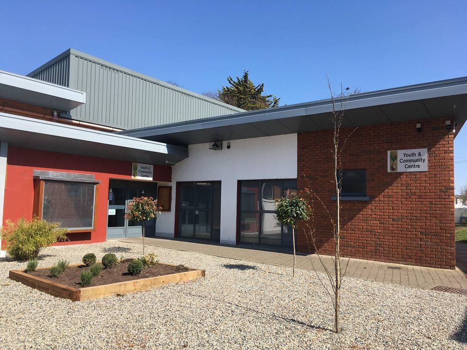
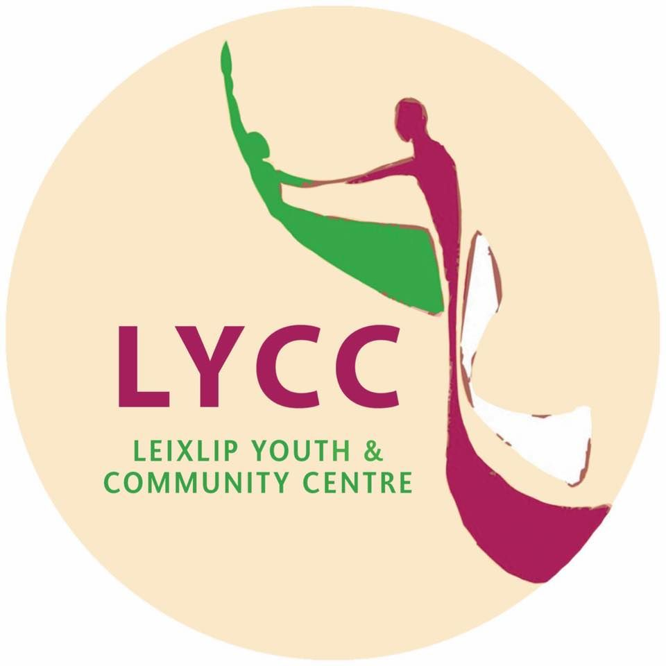

Leixlip Parent, Baby and Toddler Group
Parent-and-toddler
Leixlip Parent, Baby and Toddler Group Kildare Leixlip Parent, Baby and Toddler Group is an independent Parent & Toddler group affiliated with the Kildare County Childcare Commission. All staff involved in the group are Garda Vetted. The group is well equipped with age appropriate, educational and sensory toys (mostly new), which are rotated between sessions after being fully cleaned. Bathrooms with baby changing areas are located outside the Hall. Location: Leixlip Youth and Community Centre, Newtown House, Captain's Hill, Newtown, Leixlip, Co. Kildare, W23 T8W5 Day/Time: Every 10am on Mondays and 11am on Tuesdays (during term time) 💶 Cost: €2 per family
Ages: 0-6 months, 6-12 months, 1 year old, 2 year old, 3 year old, 4 year old, 5 year old
Address: Newtown, Leixlip, County Kildare, W23 T8W5, Ireland
View on Google Maps →
Visit Website
View on Google Maps →